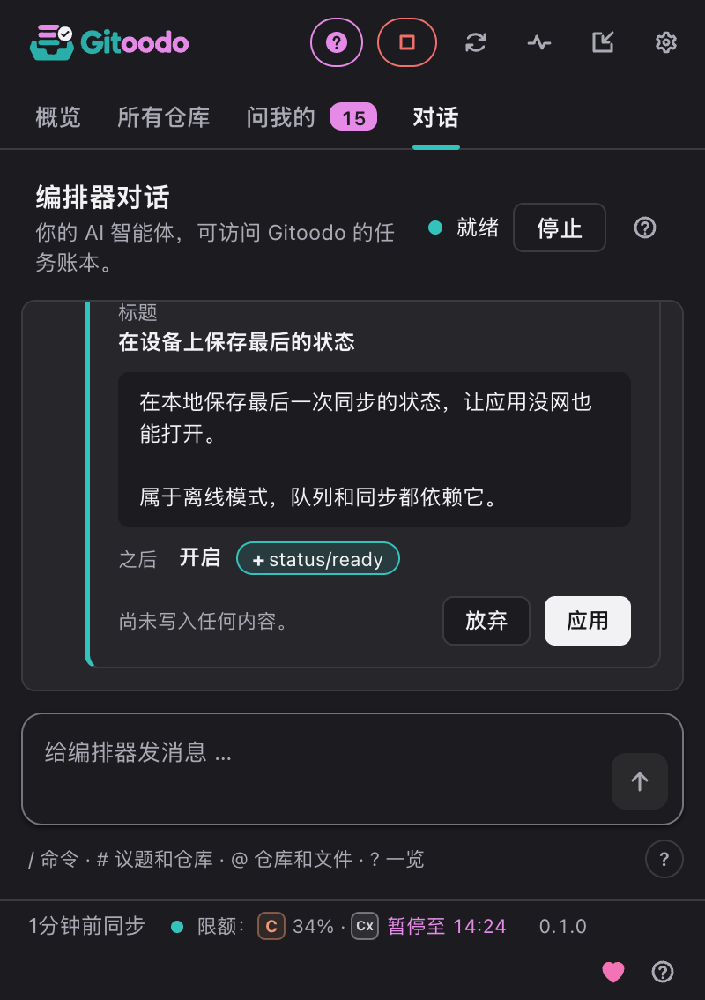

在聊天里商量要做什么。
编排器聊天是你在设置中选定的编程智能体的一个会话，带着 Gitoodo 的工具。它提议 issue、标签或评论时，会显示一张卡片。点击“应用”后才会写入。
输入 / 可调用 /status 或 /pause 之类的命令，# 引用 issue 和拉取请求，@ 引用仓库和文件。出了问题时，/doctor 会在一张列表里检查账号、服务和智能体。
较大的项目由你和它一起拆分：每个新 issue 它都会单独用一张卡片提议，包含标题、正文和标签。
